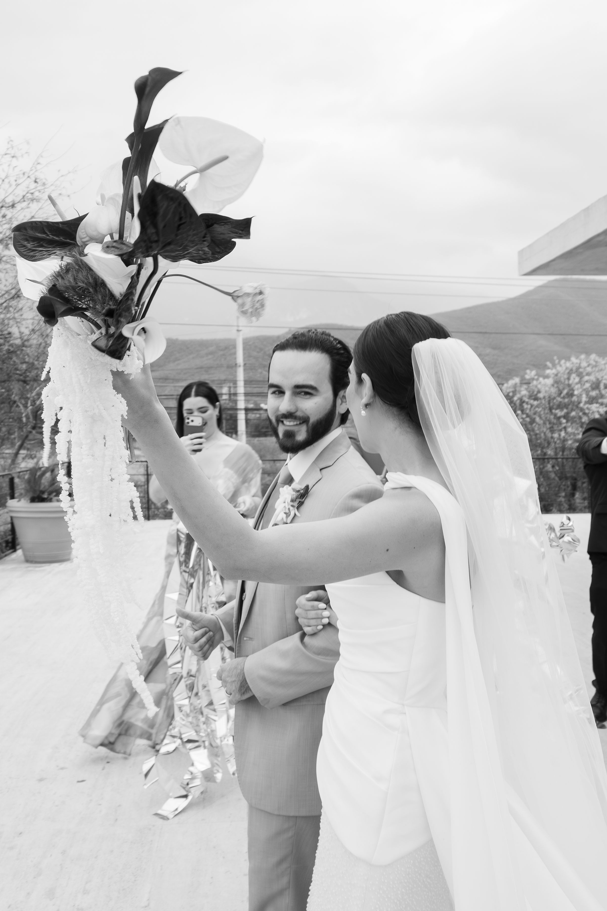
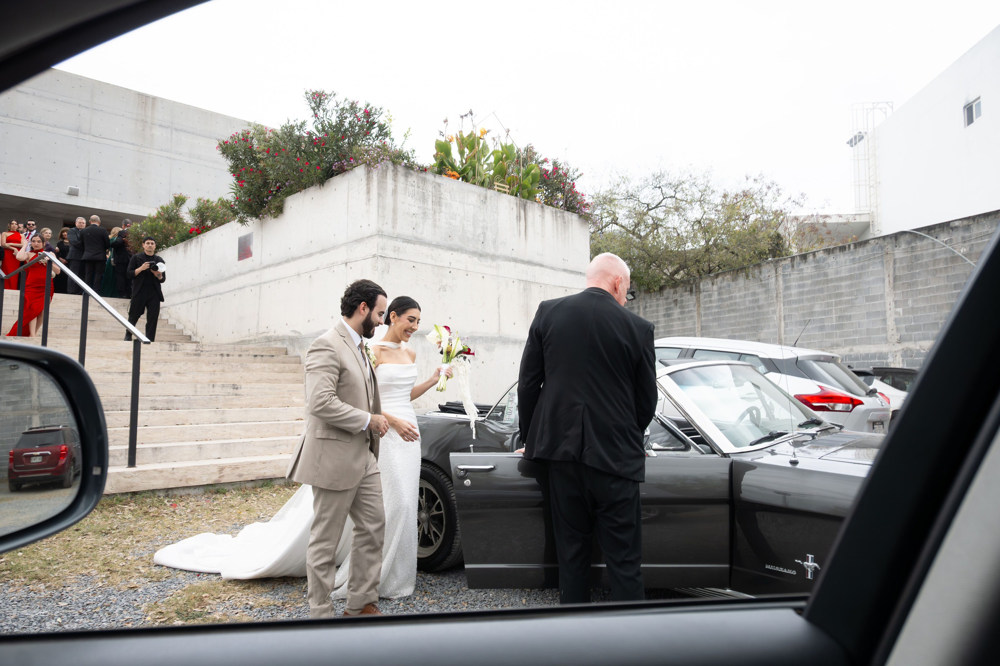
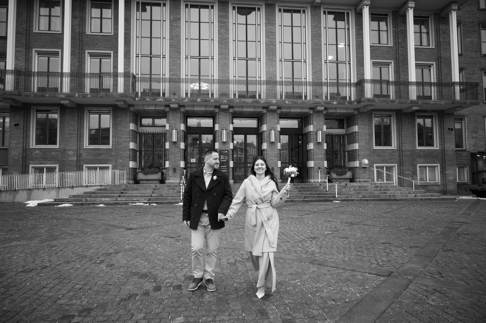
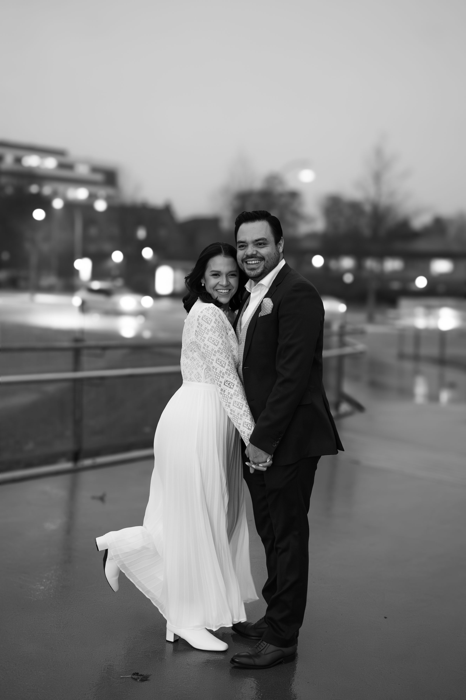
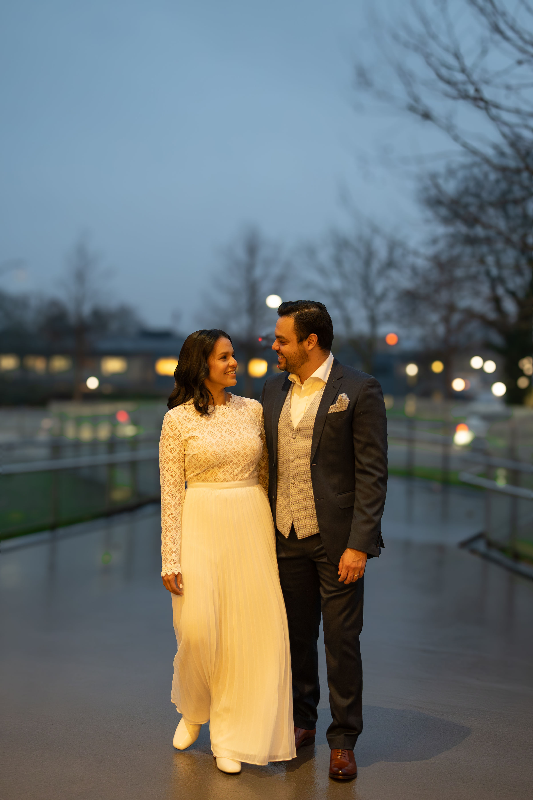

Weddings
Timeless, emotive imagery for the architecture, movement, and intimacy of a wedding day.
01
An editorial wedding story.
The wedding edit keeps scenes together: ceremony, portraits, quiet gestures, and celebration unfolding in a deliberate visual rhythm.







